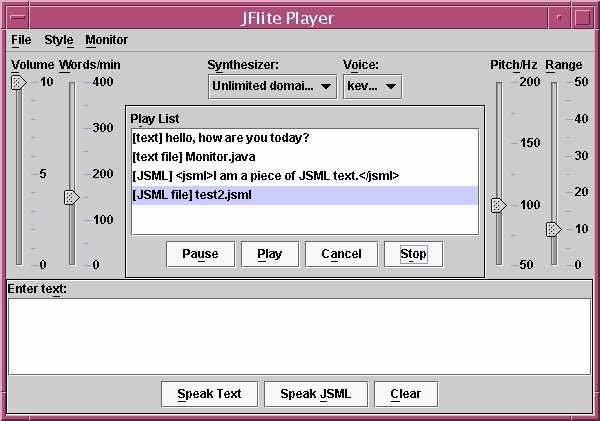
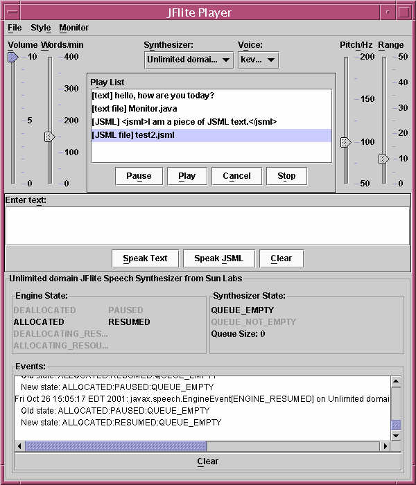

The Player demonstrates the use of JSAPI to build applications. It is capable of performing text-to-speech on ASCII text, ASCII text files, JSML text, and JSML files. Here is a snapshot of the Player:

How to run the Player?
To run the Player on a Unix system, type, in this directory:
gmake
run.
To run the Player on a Win32 system , type, in this directory: run Player
How do I play stuff?
- Plain text
Simply enter text at the "Enter text" text area, then press the button "Speak Text". The text you entered will be played, and inserted to the Play List.
- Text file
Select the File menu, Speak, Text File.... A file choosing dialog will appear. Select a text file, which will be added to the Play List and played. Do not use this method if you want to play a JSML file. Instead, see the bullet JSML file.
- JSML text
Simply enter JSML text at the "Enter text" text area, then press the button "Speak JSML". The text you entered will be played, and inserted to the Play List.
- JSML file
Select the File menu, Speak, JSML File.... A file choosing dialog will appear. Select a JSML file, which will be added to the Play List and played. There are some JSML files in this directory which you can try out. Do not use this method if you want to play a text file. Instead, see the bullet Text file.
- URL
It is assumed that the URL is a JSML URL. Select the File menu, Speak, URL.... A dialog will appear asking you to enter a URL. After entering the URL, press OK. The new URL will be added to your Play List, and will start to play.
Note:
To play any item(s) on the Play List again, simply select it on the Play List and press Play.
To clear the text in the text area, press Clear.
What else?
In addition to text-to-speech, the Player has the following functionality:
- Pause and resume the playing of text (Pause button).
- Cancel the current utterance (Cancel button).
- Change the volume (Volume slider), speaking rate in words per minute (Words/min slider), the pitch (Pitch/Hz slider), and the range (Range slider). The pitch is the base pitch of the voice, where range is amount of pitch variation allowed. Note that these changes will take effect only on the next utterance.
- Change to another synthesizer (Synthesizer combo box) and voice (Voice combo box).
- Monitor the progress of the text-to-speech process (select menu Monitor, Show).
- Change the default look & feel (select Style menu, Look & Feel, and then select the desired look & feel).
Engine Monitor
The Player includes a Synthesizer Engine Monitor, which allows you to observe the changes in the state of the synthesizer during different stages, e.g., when initializing, performing TTS, etc.. Simply select the Monitor menu, Show) to see it working. To hide it, select the Monitor menu, Hide. Here's a snapshot of the Player with the Monitor:

See the license terms and acknowledgments.
Copyright 2001 Sun Microsystems, Inc. All Rights Reserved. Use is subject to license terms.